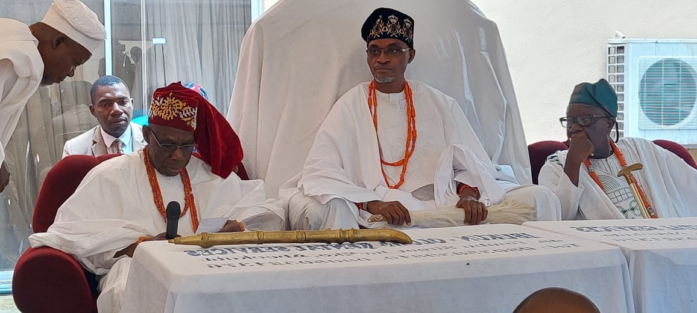

Oba Prof. Matemilola: The Crown That Feeds the Future: Oba Prof. Matemilola and the Kingdom of Hope
They say royalty is in the blood, but for some, it flows in the heart. Through their deeds, their dreams, and their undying devotion to the people. Oba Prof. Saka Matemilola Adelola, the Olowu of Owu Kingdom, is not just a king by ancestry. He is a monarch by mission. A man whose throne is not merely gold and coral beads, but one carved from compassion, conviction, and a vision that could light the skies of a thousand villages.
In the kingdom of Owu, hope no longer hangs like mist. It has taken form, become flesh, and now walks among the people. And that hope bears a name: The Olowu Hope Initiative.
A Palace Reimagined: The First Green Royal Palace in the World
In a world where climate anxiety looms like a storm cloud, one king dares to walk a different path. Barefoot on the soil of sustainability, wrapped in tradition, yet crowned with innovation.
Oba Matemilola has transformed the Owu Palace into the first green royal palace in the world. A bold, historic milestone that marries royal tradition with futuristic thinking.
This is not just a palace with solar panels or rainwater harvesting systems. It is a living, breathing symbol of environmental leadership. A structure that whispers to every guest, 'It is possible to honor the past and protect the future.
Visitors step into the Owu Palace and find themselves in a space where culture meets climate consciousness. Ancient walls now breathe through modern ventilation systems. Royal grounds powered by renewable energy. And every inch of the space radiates the message that sustainability is not foreign to Africa — it can be born from it.
“When people walk into the palace now,” said one visitor, “they don’t just see history. They breathe the future.”

Cowries in 3D: The Culture That Came Back to Life
Even as the palace looks to the future, the king has not forgotten the past. In one of his most imaginative cultural projects, Oba Matemilola resurrected the ancient cowry money, but not for trade. Instead, he brought it back in 3D-printed form, reimagined as a cultural and educational tool for children.
Where dusty history books fail, these cowries speak. They tell stories of pre-colonial commerce, societal values, and spiritual symbolism. They help children touch their heritage, see their past, and understand their identity.
It is an artful blend of technology and tradition. A subtle, powerful move to reclaim our story and pass it on with pride
A Revolution Woven with Compassion
While most rulers carry sceptres, Oba Matemilola carries a revolution. The kind that doesn’t wave flags or beat drums but instead fills stomachs, funds dreams, heals wounds, and dares to ask, 'What if we left no one behind?'
Under his reign, the Olowu Hope Initiative (OHI) was born. Not as a foundation in name only, but as a living, breathing force for good. It's a blueprint for transformation rooted in education, economic empowerment, and healthcare. Each branch reaching into the homes, hearts, and hopes of the people.
If you’ve ever wondered what royalty looks like in action, look no further than the child who now eats daily and studies with confidence. The woman who turned her first loan into a thriving business. The elderly man who walked into a clinic and received care without fear
Feeding Minds, One Meal at a Time
Among the crown jewels of this movement is the Meal-A-Day Program, a part of the Olowu Scholars Program. It is not just food on a plate. It is energy in the classroom, clarity for young minds, and dignity for growing dreams.
Over 200 students are supported annually. Their exam fees paid. Their lessons reinforced through tutorials. And now, their daily meals served with consistency and care
He is not just educating children. He is nourishing the future
Women Rise When Royals Lead Right
Where some see vulnerable women, Oba Matemilola sees economic powerhouses. Through the Women Empowerment Micro-Credit Scheme, interest-free loans have empowered hundreds of women to build businesses, feed their families, and rise in confidence.
But it is more than money. It is mentorship. A peer-to-peer network of strength, where women support women and success becomes contagious.
The Crown That Cares: Health for the People
The Olowu Health Insurance Program is a health revolution at the grassroots. Over 20,000 people now have access to quality care, through upgraded health centers, trained staff, and covered school clinics
This is not charity. It is smart, scalable impact rooted in community needs and executed with royal precision
Spotlighting a King Like No Other
Oba Prof. Matemilola is not a footnote in the narrative of Nigeria. He is a headline, a cornerstone, a renaissance in motion. He doesn’t just reign. He redefines what leadership can mean for Africa
At Spotlite Africa, we do more than celebrate changemakers. We recognize revolutions. And this, dear reader, is one
A Final Word to the Next Changemaker… Maybe You
He turned a palace into a green marvel. He brought back cowry currency to educate children. He funded futures, mentored mothers, healed the sick, and planted seeds that will outlive him.
So the question is not, “Can one person change the world?” The question is, “What are you waiting for?”
Let Oba Prof. Matemilola’s story be the matchstick. And may you be the flame